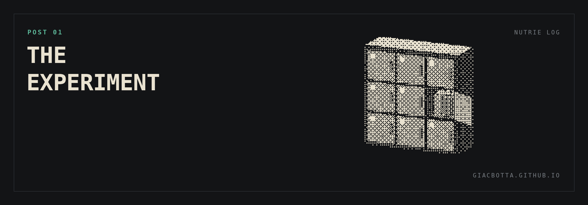
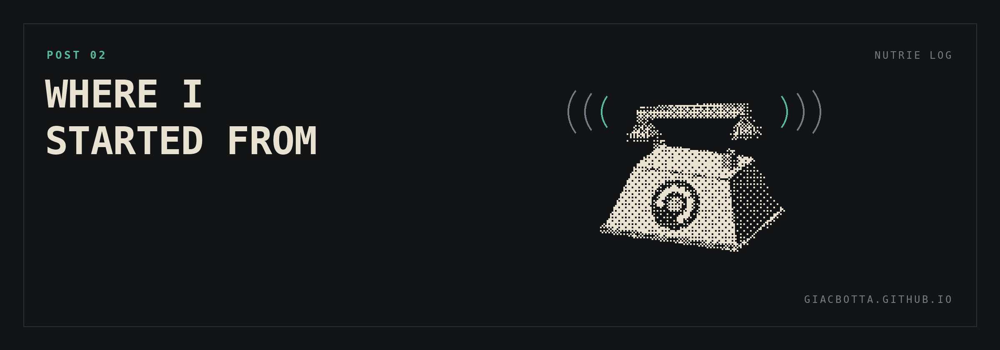
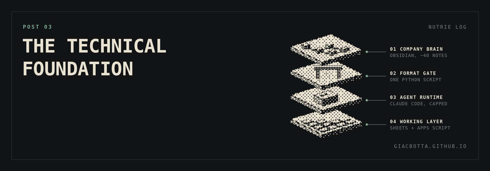
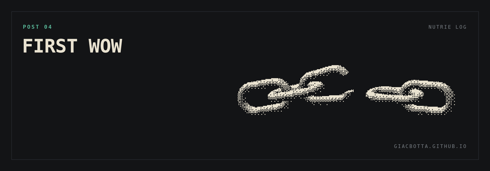
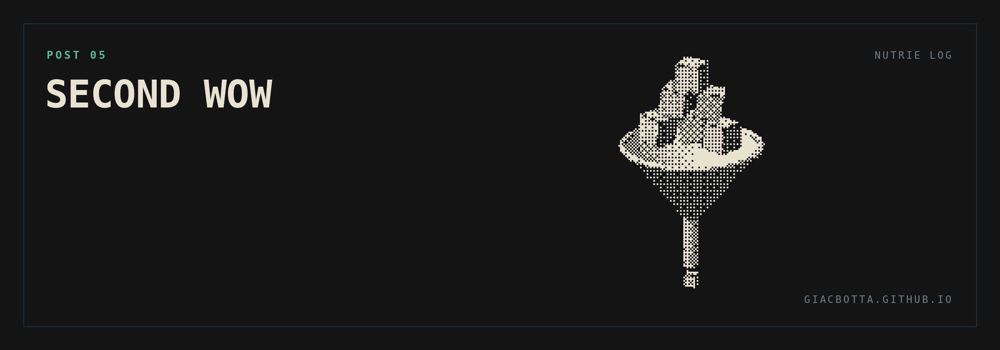
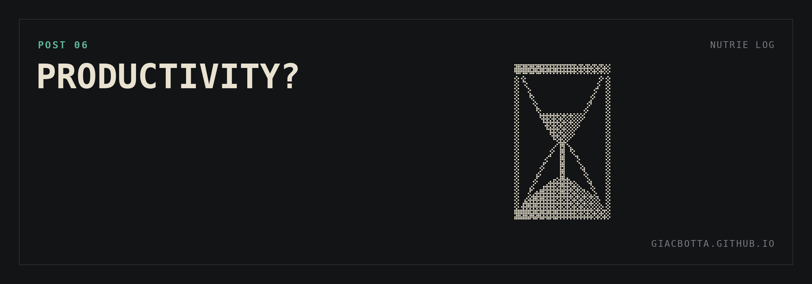
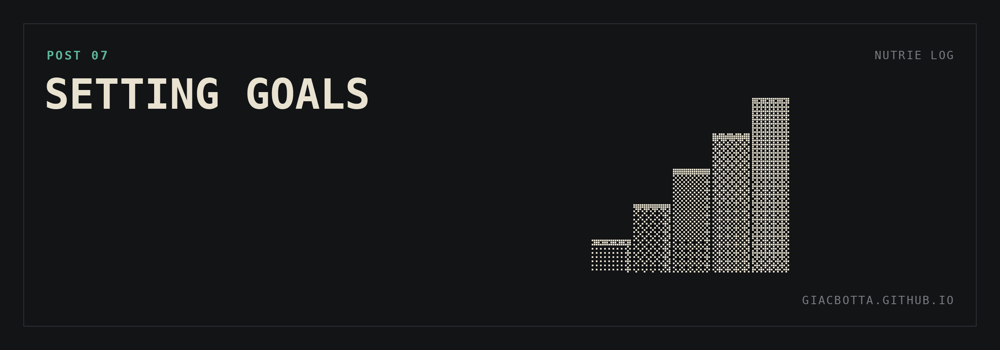
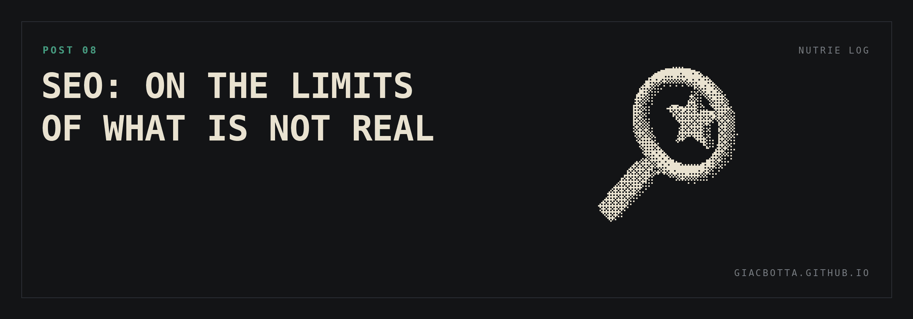
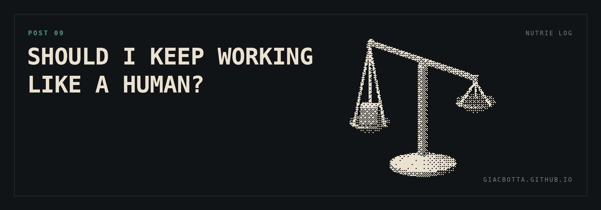
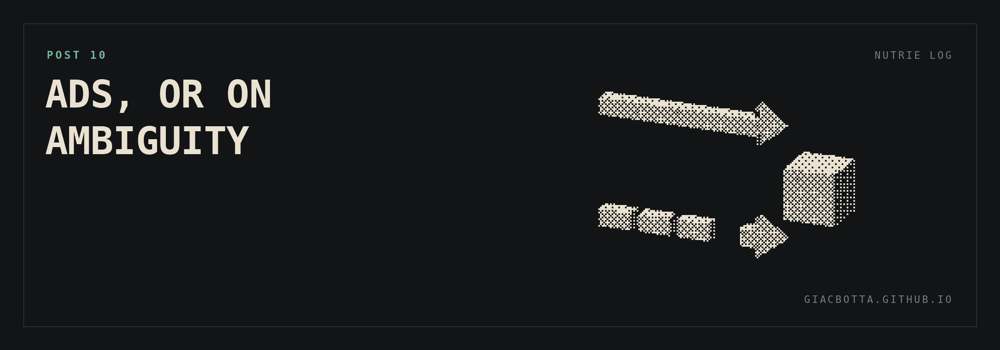

Operating log
An AI brain on a boring business.
I own an automated luggage storage in Venice. Small, low margin, physical,
seasonal. I am putting an AI brain and a set of agents on top of it and
publishing what happens. One post a week, real numbers, some experiments and hopefully useful reflections.
- Business
- Automated luggage storage, Venice
- Acquired
- 2023, with a friend
- Cadence
- One post per week
- Success criterion
- Margin up, my hours down
Index
- The experimentWhy this business, what I mean by brain, what I measure.
- Where I started fromWhat I found, what I changed, what it produced.
- The technical foundationThe stack, and why it is deliberately small.
- First wowThe setup found the cause of a booking drop I had stopped looking for.
- Second wowA script I did not know to ask for, and the invisible bottleneck behind that.
- Productivity?More done, more time spent, and no answer yet on whether it is the right work.
- Setting goalsWhy the brain now gets goals, and a scale from easiest to hardest.
- SEO: on the limits of what is not realAI research says real customer feedback matters most. The rest was quick work.
- Should I keep working like a human?Efficiency the AI way, control the human way, and one website caught between them.
- Ads, or on ambiguityAttribution is broken by design here, and Claude would not pick a goal.
- Weekly logs. Next one pending.

Post 01
The experiment
In 2023 I had money to invest and no interest in investing it. I hold my share
of ETFs and I find the whole thing boring to death. I wanted to own something
that behaved like an investment but was actually mine: a business that ran by
itself, that I could keep building on top of, and that I could develop with a
friend for the fun of it.
And there was an obvious angle. My job is optimizing and automating processes for
other companies. Why not buy one and do it for myself?
So we bought an automated luggage storage business in Venice. Small, local, low
margin, very unglamorous. It worked. Now I want to run an experiment on it. If I
put an AI brain and a team of agents on top of a business like this, does the
margin actually move? I am running that experiment in public. One post a week,
real numbers, some reflections.
Why this business
- Low margin, local, small. The kind of business software usually ignores.
- Worst possible constraints: finite space, a physical location, low price elasticity, seasonal demand.
- If AI moves the margin here, it moves the margin almost anywhere.
What I mean by brain
- One system that sees all the business data: bookings, occupancy, costs, ad spend, customer requests.
- On top of it, separate agents with one job each: pricing, ads, support, content, monitoring.
- I decide. They execute and report.
What I measure
- Overall margins.
- Occupancy rate.
- Customer acquisition cost.
- My own hours on operations.
One success criterion: margin up and my hours down.
What I do not want
- Revenue growth bought by burning margin on ads.
- More tools. I want less work.
Next post: the baseline. What we bought, what was wrong with it, and what we changed.

Post 02
Where I started from
Before the experiment, the baseline. In 2023 I bought an automated luggage
storage business from an owner who ran the physical side fine and had no idea
how to sell it online (but paid an agency). Nothing was broken. The business was
simply invisible and manual. I applied the bare minimum of digital knowledge, in
three areas, over the following period. This is what I found, what I changed, and
what it produced. The AI experiment only means something when improving on these
numbers.
What I found
- Access and usage instructions written badly. Customers arrived on site and did not know what to do.
- No online booking.
- Internal operations run by hand.
- The phone ringing constantly, always for the same predictable problems.
What I changed
Three areas. None of them sophisticated.
- User experience. Rewrote from scratch the guidelines, how you access it, how you use it.
- Automation. Online booking and internal operations first. Then I mapped every possible customer problem, one by one, and automated or prevented most of them. Stated goal: cut inbound calls to the minimum.
- Online selling. Basic level. I am not an expert and I did not pretend to be one.
Result
- Revenue doubled.
- Costs went down first, then back up above the starting point.
- Almost all of that increase is ad spend, with positive ROAS.
- The business runs on itself.
The point
I applied nothing advanced. The bare minimum was enough to double the business.
That says more about the previous owner than about me.
Next post: the technical detail of the AI. What I want to do, is it an overkill or not.

Post 03
The technical foundation
The first decision was not which tools to use. It was how little to spend. This
is a low margin business, and a stack with a fat monthly fee eats exactly the
margin I am trying to grow. There is a second risk too: overkill.
Reaching for a powerful tool when a simple one gets you to the same place. This
is an experiment, so I would rather start under equipped and add only what
proves it is needed. Here is what I am running today.
Why I started small
- Monthly tool costs come straight out of a thin margin. Every subscription has to justify itself against that number.
- Overkill is a real risk right now. Powerful tool, simple job, no gain.
- Starting light means every upgrade later is an answer to a problem I actually hit.
What I can and cannot do
- No programming background.
- I can build low code automations, but so far always with AI helping me do it.
- So I cannot judge which tool is the most efficient. I can only validate one by using it.
The stack
| Layer | What it is |
|---|
| Starting point | A setup recommended in a YouTube video, picked after comparing options. |
| Company brain | Obsidian. About 40 atomic notes to start, linked to each other. |
| Format enforcement | A small Python script that enforces the rules, so every note keeps the same format and links. |
| Agent runtime | Claude Code on a capped budget. An 80 euro a month plan is a real cost against these margins, so I am not committing to it until the return is visible. |
| Working layer | Google Drive. Sheets for reporting and as the base of the automations, with Google Scripts on top of them. |
What I left out
No RAG. No MCP. Neither solves a problem I have today.
Everything linked above is published in the repo.
Next post: The First Wow.

Post 04
First wow
The first surprise about having a company brain is that
I got value before it was finished. Setting it up meant answering questions. A lot of them.
What the machine understood was the interesting part: not just how each piece works, but how
the pieces move each other. When it hit a gap in what I had told it, it asked again.
Then it asked for access to the site. It saw a clean drop in online bookings, went looking for
a cause, and pointed at broken links created when we changed the site to add the new location.
Learnings
- I already knew bookings had dropped. I had promised myself I would find out why. I had not. It was a stupid bug that will probably not repeat.
BUT...
- An AI that knows your systems finds issues you may have ignored.
A potential value of the brain is not letting unobserved issues stay uncovered.
Numbers
| Measure | Value |
|---|
| Online bookings during the broken period | -65% |
| Duration of the problem | 2 weeks |
| Effect on the full month | -7.5% bookings |
| Value of fixing it | 7.5% of monthly revenues, recovered |

Post 05
Second wow
I am not a technical person. I can build low code automations, but only with AI doing the
typing. I cannot tell what is possible or not possible to create even within my own
constraints.
I run two management systems from two different providers. Venice is the old one, inherited
with the business: I bought an existing operation, so the door to feature requests was already
shut. Pisa is the new one, built recently, and there I was waiting on the developer to build me
a data export.
In the meantime the numbers moved by hand. Every performance figure is calculated in Google
Sheets, and nothing was filling those sheets on its own.
I assumed an agent would have logged into each panel every day, copy-pasting the numbers.
Slow, heavy on tokens, probably not worth the effort.
What it proposed instead: a script that pulls the data itself, on a schedule, with no model
running and no tokens burned. One for
Venice, one for
Pisa.
What it moves
- Not margin. This one does not add a euro.
- My hours. The copy is gone, and so is the waiting on someone else's roadmap. It's 10 minutes a day, but makes me happy.
Learnings: the real gain
- To get something out of a chatbot you have to know it is possible. That is the bottleneck, and it is invisible.
- I had already built scripts with a chatbot. Every one of them started from an idea I already had.
- A brain that knows my systems proposes the thing I did not know to ask for.
This gain is not high, but a lot more could come with a similar approach.

Post 06
Productivity?
My hours are half of the success criterion. I am not sure they are going down. Learning a new
technology costs time. At the start, it does not necessarily give that time back.
Before using AI in such a structured way, I never did more than one thing at a time. I selected
very carefully the few things worth doing. On one side, the mandatory admin. On the other, the
few actions I thought would bring the most value.
What AI changes
- It knows a lot, but it does not have my judgment on what matters. It keeps reminding me that certain tasks need doing. It pulls me into them, even when they are not the priority.
- It makes me think I can do more. Opening several fronts at once, in a business where my time is very limited, can become a distraction.
- It steers my attention toward what AI can handle. Many fronts, little time: I shift from picking the highest value task to picking the one AI can manage.
Learnings
- I get many more things done. That part is not in doubt.
- I spend more time on it. Also without a doubt.
Am I spending it in the most productive way? I do not have an answer yet.

Post 07
Setting goals
For the first weeks I let the brain run on its own, a bit blind. It asked for information and
pointed at what could improve. That is how I ended up doing more, without knowing if it was
what mattered most. Now it gets goals.
I defined them with the brain, in a conversation about the business.
Why goals
- Focus it on what matters. I want it to get better at picking the most important tasks for me.
- Test its limits.
The scale, from easiest to hardest
- Automating operations and reporting.
- SEO.
- Ads.
- Adding new self-service activities inside the existing sites, for new revenue.
- Opening new luggage storage sites.
What I expect
- Automation & SEO: it will help a lot.
- Ads: I have no idea how much it can move.
- Expansion: if it only helps find places and opportunities, that is already an upgrade.
The harder the goal, the less sure I am that it can deliver. And the more it is worth if it does.

Post 08
SEO: on the limits of what is not real
SEO was the second goal on the scale. It often feels like a mystical discipline: people believe
success comes down to an expert's dirty tricks. I had AI research what actually moves the needle
for a business like mine. The conclusion was much more grounded: real feedback from actual
customers matters most.
What else the research found
- Clear opportunities to improve the website.
- Complex keywords that do not rank well right now, especially in other languages.
What AI did
Every task below was done by AI, quickly and mostly automated.
- Added translations to the website, which was English only.
- Started posting regularly on the Google Business Profile.
- Listed the business in more online service directories, with accurate and consistent information, to help Google rank it higher.
Learnings
- The feedback lever has a limit. Beyond small tweaks to response rates, I cannot move it much further.
The real test for the coming months: whether all the small tweaks create a measurable business impact, or AI matters less on this goal than I expected.

Post 09
Should I keep working like a human?
Changing one thing on the website put the experiment in front of a classic trade off. I can work
the AI way, which is far more efficient or I can work the human way, which keeps me in control
but costs more time and more tokens.
How it started
- The SEO research found that the site rebuild had dropped a set of keywords, most of them in foreign languages.
- On Squarespace the standard fix is an extension. Weglot, the language plugin, costs 150 euro a year for a few pages in a second language.
- That is 62.5% of Claude’s costs. Removing one plugin pays back most of Claude investment. Plus it allows me more languages and pages.
- AI can build and maintain the extra language pages. Maintenance is the delicate part, and the real cost of running multiple pages.
The ways to do it
- Moving and copying blocks in the browser. Slower, more tokens, but it leaves a structure I can edit myself.
- Code injection. Faster, fewer tokens, cleaner to maintain. But I’m no developer: the site stops being something I can touch.
- Even more radical: I could abandon Squarespace completely.
Handing the whole site to code injection scares me. The day AI is not available, I am left with a site I cannot fix quickly.
Where I landed
- Control, for now. I keep the browser route and a structure I understand.
- Cost: down. I avoid an extension I do not need.
- Time: down, but only partially. It would drop much further if I gave the site entirely to AI.
- The language pages are a long term bet. Nothing to show for them this month.
This is one small website and one person deciding.
Inside a bigger company, the same trade off could mean a massive restructuring.

Post 10
Ads, or on ambiguity
Ads were the third goal on the scale. Performance marketing on a local business has one
structural problem, and it does not get easier because the business is small: attribution.
Customers can book online or walk into the deposit and pay on the spot. So no Google Maps metric
predicts sales, and no website metric does either. Anyone can find the location on the site and
then pay in person instead of booking.
What that means in practice
- Online booking signals are almost always ambiguous.
- Only a small share of our customers ever passes through an online booking.
- The closest proxy we have is a site visit that shows intent. A click on something, not a page view.
What I asked
I gave Claude every path a customer can take to buy from us. Then I asked it to set the Ads goal
from first principles, based on how people actually buy. Not the answer I already had in my head,
but what to set, what to optimize, what counts as a conversion.
What I got
- The obvious answer: track online purchases. That ignores most of the funnel and does not work.
- Then nothing. It kept handing the decision back to me, even when I pushed it to commit.
- On an ambiguous problem it did not make a call.
What changes
- Nothing in how I run Ads. I keep optimizing the way I did before.
- Claude still helps once the goals are set. It just did not set them.
Seems like I can’t trust him to decide under ambiguity… or maybe I just don’t know how to prompt.